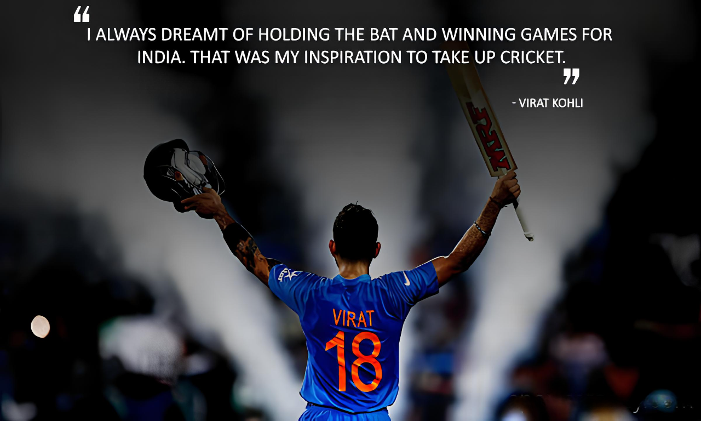

VIRAT KOHLI
About
Virat Kohli is an Indian international cricketer and former captain of the Indian national team who plays as a right-handed batsman for Royal Challengers Bangalore in the IPL and for Delhi in Indian domestic cricket. Virat Kohli was born on the 5th of November in 1988 in Delhi. His father was Prem Kohli and his mother Saroj Kohli. His father worked as a lawyer and he passed away in December 19th, 2006 due to brain stroke. Virat has an elder brother, Vikash and an elder sister, Bhavna. He had his schooling in St. Sofia School in Paschim Vihar, Delhi. Virat Kohli was among the first intake of The West Delhi Cricket Academy which was created in 1998. Virat was included in the Delhi Ranji team on 23rd November 2006. He played his first match against Tamil Nadu. Virat became famous when he played for Delhi in the Ranji trophy, a match against Karnataka. He scored 90 in that match. On that day only (19th December 2006), at 3 oclock in the morning, his dad passed away due to brain stroke. Virat played his first T 20 match against Himachal Pradesh at Delhi on the 3rd of April 2007. In 2008, he was the captain of the under 19 Indian Cricket team in the World Cup and India also won that match. He is also a part of Royal Challengers Bangalore from the year 2008. He made his debut In One Day International against Sri Lanka in the Ideal Cup in 2008, when both the great batsman Virat Tendulkar and Virendar Sewag were injured. In the first match Virat was not able to prove him that much since he got out for 12 runs, but in the second match he scored a crucial 37 runs, which helped India win the match and level the series. Virat scored his first half century in the fourth match, which helped India win the series against Sri Lanka. This win was very special for India since it was Indias first win against Sri Lanka in Sri Lanka. In January 2009, Virat Kohli was dropped from the squad for the fifth ODI series in Sri Lanka against Sri Lanka. He then played in 2009 ICC Champions Trophy since Yuvraj Singh was injured and was not able to play in that match. Virat scored his first ODI Century in the 4th ODI in December 2009. Once Yuvraj became fit, Virat was only able to play occasionally. Virat Kohli married to Bollywood Actress Anushka Sharma on 11 December 2017. In January 2021 they had a daughter named Vamika Kohli.


Achievements
- Virat Kohli is the only Indian batsman who got 890 rating points in the ICC ODI ranking. Previously Sachin Tendulkar got the best rating of 887 in 1998.
- Virat Kolhi has the record of having the highest ICC rating points (922) in the ICC Player Rankings for Test Batsmen.
- Virat Kohli scored six double centuries as a captain in test matches. He surpassed Cricket legend Brian Lara, who had five double centuries as a test captain.
- Virat Kohli has the most number of 150+ scores as captain in Tests 9 times.
- Virat Kohli scored more than 20,000 runs at an average of over 50 in all formats -Test matches, One Day Internationals, and T-20 matches.
- Virat Kohli becomes the first Indian cricketer to cross 10,000 T20 runs.
- First cricketer to hit 973 runs in a single edition of the Indian Premier League (IPL)
- Ricky Ponting(2006, 2007) and Virat Kohli(2017, 2018) are the only cricketers to win the Sir Garfield Sobers Trophy in successive years.
- Most ODI runs in a calendar year by an Indian cricketer 2010, 2011, 2012, 2013, 2014, 2015, 2016
- Fastest Indian to reach 1000, 5000, 6000, 7000, 8000, 9000, and 10,000 runs in ODIs
- ICC ODI Player of the Year: 2012, 2017
- ICC Test Team of the Year: 2017 (captain)
- Padma Shri: 2017
- ICC ODI Team of the Year: 2012, 2014, 2016 (captain), 2017 (captain)
- Arjuna Award: 2013
- Rajiv Gandhi Khel Ratna: 2018
- Sir Garfield Sobers Award for ICC Mens Cricketer of the Decade(2010-2020)
If you have time, you should read more about this mesmerizing young fellow on this Wikipedia entry.